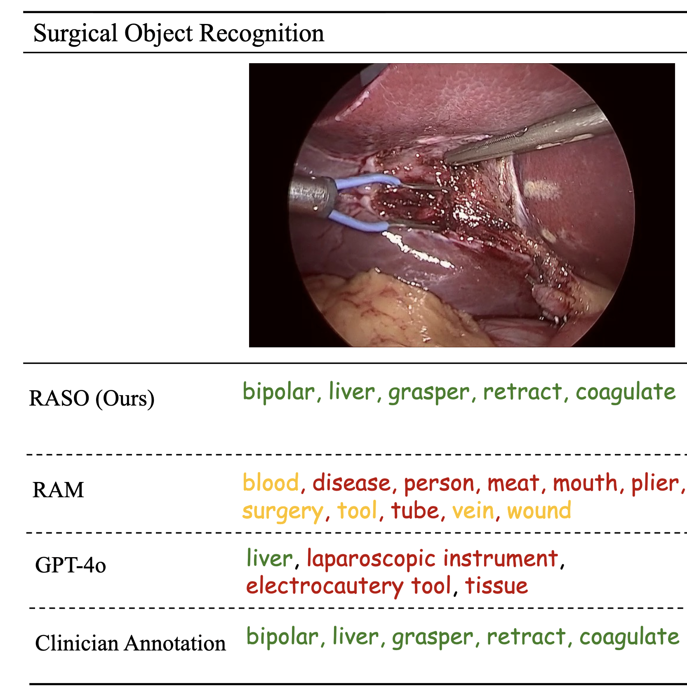
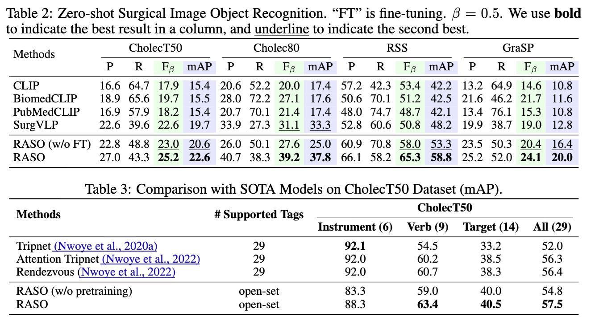
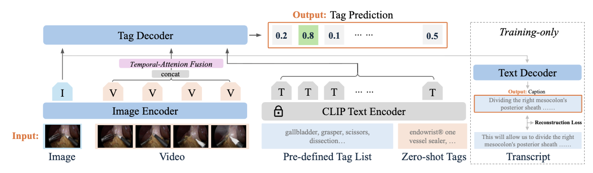

RASO brings generalist recognition capabilities into the operating room. It fuses large-scale weakly supervised data with language grounding to detect and tag surgical instruments and supporting objects without exhaustive per-procedure annotations.

Recognize dozens of instrument and anatomy concepts out of the box by aligning vision features with rich language prompts.
Leverages large amounts of weakly labeled surgical video to learn transferable representations without dense annotations.
Drop-in PyTorch interface with ready-made transforms, threshold tuning, and fine-tuned weights for downstream deployment.

RASO is a foundation model for computer-assisted surgery. The model combines a flexible transformer backbone with multimodal contrastive training to align visual features of laparoscopic scenes with descriptive language prompts. As a result, RASO performs robust recognition of both common and rare surgical objects, even when the exact class was never shown during supervision.
We release two ready-to-use checkpoints: a zero-shot model and a Cholect50 fine-tuned variant for high-precision instrument tracking. The package exposes simple APIs for loading checkpoints, feeding video frames, and extracting ranked tags with calibrated scores.

Install the package, download pretrained weights from Hugging Face, and run the inference helper to obtain ranked tags for each frame.
# Clone the repository
git clone https://github.com/ntlm1686/raso.git
cd recognize-any-surgical-object
# Install dependencies
pip install -r requirements.txt
# Install the package
pip install -e .
Use inference for standard closed-set predictions from the pretrained checkpoints.
import torch
from PIL import Image
from raso.models import raso
from raso import inference, get_transform
model = raso(pretrained="./MODEL/raso_zeroshot.pth", image_size=384, vit="swin_l")
model.eval()
device = torch.device("cuda:0" if torch.cuda.is_available() else "cpu")
model = model.to(device)
transform = get_transform(image_size=384)
image = transform(Image.open("./examples/img_01.png")).unsqueeze(0).to(device)
tags, logits = inference(image, model, threshold=0.65)
print(tags)
Pair RASO with a CLIP text encoder to score custom vocabulary while preserving the closed-set predictions.
from transformers import CLIPModel, CLIPProcessor
clip_model = CLIPModel.from_pretrained("openai/clip-vit-base-patch32").to(device)
clip_proc = CLIPProcessor.from_pretrained("openai/clip-vit-base-patch32")
tags_closed, _ = inference(image, model)
print("Closed-set tags:", tags_closed)
extra_tags = ["hemostat", "laparoscopic grasper", "trocar 5mm", "new tag 1", "new tag 2"]
tags_open, open_logits, full_tags = inference_openset(
image=image,
raso_model=model,
clip_model=clip_model,
clip_tokenizer=clip_proc.tokenizer,
extra_tags=extra_tags,
threshold=0.68, # tune for precision vs. recall
return_tags=True,
)
print("Open-set tags:", tags_open)
print("Open-set logits shape:", open_logits.shape)
Lower the threshold when you want to surface more novel tags, or drop return_tags=True if you only need the logits.
See the README for installation details and troubleshooting tips.
Generalist checkpoint balancing recall and precision across a wide vocabulary of surgical instruments and anatomical structures.
File raso_zeroshot.pth
Task-optimized weights for the Cholect50 benchmark with improved instrument discrimination and stability under occlusion.
@misc{li2025recognizesurgicalobjectunleashing,
title={Recognize Any Surgical Object: Unleashing the Power of Weakly-Supervised Data},
author={Jiajie Li and Brian R Quaranto and Chenhui Xu and Ishan Mishra and Ruiyang Qin and Dancheng Liu and Peter C W Kim and Jinjun Xiong},
year={2025},
eprint={2501.15326},
archivePrefix={arXiv},
primaryClass={cs.CV}
}